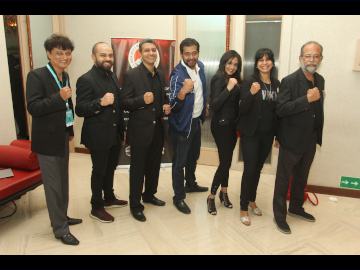

Dan is married to his wife Lorelei and is the father to two beautiful girls Raelynn and Rochelle.
Dan says that the one thing that wakes him up every morning and gives him the motivation to face all of life's challenges is the responsibility of a husband and a father and he would never give up that job for anything else in the world.
Dan is proud of his close circle of loved ones, his close friends and extended family that are part of his personal life, his spiritual life and his work.
